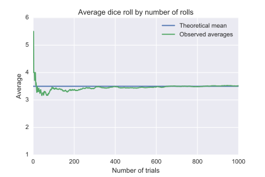

The
Law of Large Numbers (LLN), first proved by the Swiss mathematician Jacob Bernoulli in 1713, is a fundamental concept in probability theory and statistics.
The law states that as the number of identically distributed, randomly generated variables increases, their sample mean (average) approaches their theoretical mean.
It means that if we repeat an experiment independently a large number of times and average the result, what we obtain should be close to the expected value.
Here are some key points about it:
- According to the law, the average of the results obtained from a large number of independent identical trials should be close to the expected value and tends to become closer to the expected value as more trials are performed. [2]
- The law guarantees stable long-term results for the averages of some random events. For example, while a casino may lose money in a single spin of the roulette wheel, its earnings will tend towards a predictable percentage over a large number of spins. [2]
- Importantly, the law applies only when a large number of observations are considered. [2]
The law of large numbers is used by various businesses and industries to produce reliable results, such as casinos, insurance companies, and renewable energy.
There are two main versions of the law of large numbers. They are called the
weak and
strong laws of the large numbers. The difference between them is mostly theoretical.
Before discussing them, it is necessary to define the
sample mean.
Definition For i.i.d. (independent and identically distributed) random variables \(X_1\),\(X_2\),...,\(X_n\), the sample mean, denoted by \(\bar{X}\), is defined as
\[\bar{X} = \frac{X_1 + X_2 + ... + X_n}{n}.\]
Note that since the \(X_i\)'s are random variables, the sample mean \(\bar{X}\) is also a random variable. In particular, we have:
\[E[\bar{X}] = E[\frac{X_1+X_2+...+X_n}{n}] = \frac{1}{n}[E(X_1)+E(X_2)+...+E(X_n)]=\]
Now, the \(X_i\) are identically distributed, which means they have the same mean \(\mu\). Therefore, replacing \(E(X_i)\) with the alternative notation \(\mu\), we get:
\[= \frac{1}{n}[\mu+\mu+...+\mu] = \frac{1}{n}[n\mu] = \mu.\]
\[\Rightarrow E(\bar{X})=\mu\]
Also, the variance of \(\bar{X}\) is given by
\[Var(\bar{X})=Var(\frac{X_1+X_2+...+X_n}{n})=Var(\frac{1}{n}X_1+\frac{1}{n}X_2+...+\frac{1}{n}X_n)=\]
\[\frac{1}{n^2}Var(X_1)+\frac{1}{n^2}Var(X_2)+...+\frac{1}{n^2}Var(X_n)=\frac{1}{n^2}[\sigma^2+\sigma^2+...+\sigma^2]=\]
\[\frac{1}{n^2}[n\sigma^2]=\frac{\sigma^2}{n}.\]
\[\Rightarrow Var(\bar{X})=\frac{\sigma^2}{n}\]
The result shows that as the sample size \(n\) increases, the variance of the sample mean decreases.
The weak law of large numbers (WLLN)
Let \(X_1\),\(X_2\),...,\(X_n\) be i.i.d random variables with a finite expected value \(\mu < \infty\). Then, for any \(\epsilon > 0\),
\[\lim_{n\to\infty} P(\vert \bar{X} - \mu \vert \geq \epsilon) = 0.\]
It means that, for n that tend to infinite (huge number of i.i.d random variables), the difference between the sample mean and the expected value is small.
The proof of the weak law of large number is easier if we assume \(Var(X)=\sigma^{2}\) is finite. In this case we can use Chebyshev's inequality to write
\[P(\vert \bar{X} - \mu \vert \geq\epsilon)\leq\frac{Var(\bar{X})}{\epsilon^2} = \frac{Var(X)}{n\epsilon^2}\]
which goes to zero as \(n\to\infty.\)
The strong law of large numbers (SLLN)
Let \(X_1\),\(X_2\),...,\(X_n\) be i.i.d random variables with a finite expected value \(\mu < \infty\). Let also
\[\bar{X} = \frac{X_1 + X_2 + ... + X_n}{n}.\]
Then, \(\bar{X}\) converges almost surely to \(\mu\).
Simulation
For a practical example, consider a fair, six-sided die. A single roll produces one of the numbers 1, 2, 3, 4, 5, or 6, each with equal probability. Therefore, the expected value of the average of the rolls is 3.5. According to the law of large numbers, if a large number of six-sided dice are rolled, the average of their values (sometimes called the sample mean) will approach 3.5, with the precision increasing as more dice are rolled. [2]

Illustration of the law of large numbers using a particular run of rolls of a single die
The illustration shows that as the number of rolls in this run increases, the average of the values of all the results approaches 3.5. Although each run would show a distinctive shape over a small number of throws (at the left), over a large number of rolls (to the right) the shapes would be extremely similar.